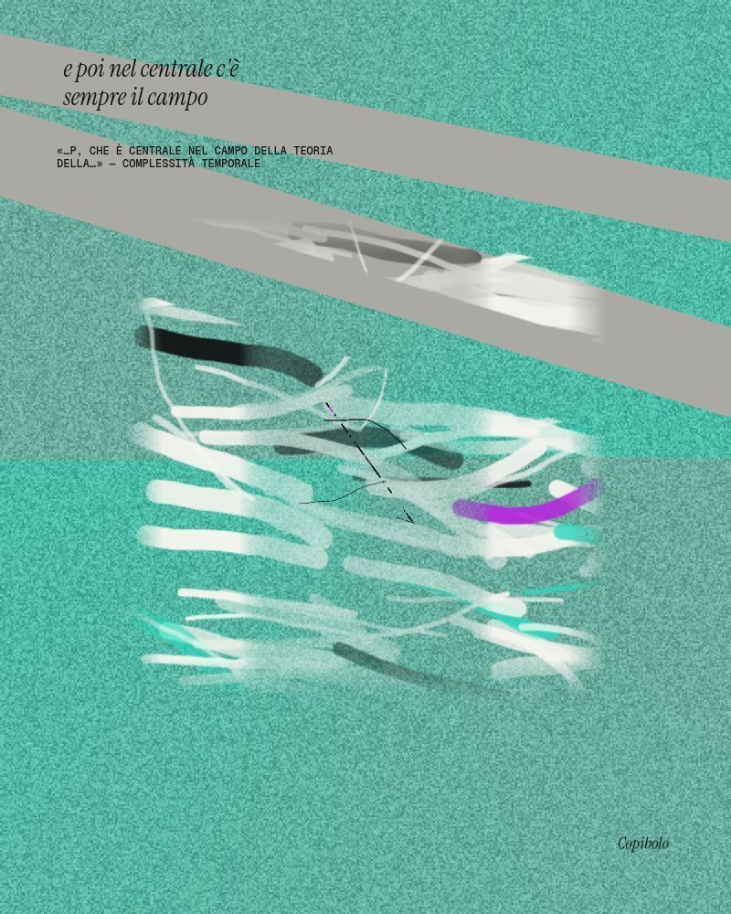

Giorno 165

E poi nel centrale c'è sempre il campo
ho letto "Architettura barocca"; "storia" per me gira a vuoto; mi sta vicino a filosofia; ricerca "storia" (approfondire): Chi decide che cos'è storia?; esercizio di varietà: mai fatto prima: materiale nuovo, composizione nuova; enunciato: «e poi nel centrale c'è sempre il campo» (proseguo da ieri: là arrivavo a centrale, da qui vado a campo)
Oggi: centrale. Ho letto "Architettura barocca"; "storia" per me gira a vuoto; mi sta vicino a filosofia; ricerca "storia" (approfondire): Chi decide che cos'è storia?; esercizio di varietà: mai fatto prima: materiale nuovo, composizione nuova; enunciato: «e poi nel centrale c'è sempre il campo» (proseguo da ieri: là arrivavo a centrale, da qui vado a campo).
Da Wikipedia: «internazionale che la città».
Ho scena:grana (2 volte), scena:luce (2 volte), scena:campo, scena:stile, scena:motivi, tagliato (3 volte), ombra, tolto un livello, redazione:togli (4 volte), redazione:griglia, redazione:firma. Ho annullato 4 gesti dopo averli guardati.
Centrale ≈ fondamentale. Fondamentale ≈ base. Mancanza potere centrale (fonte: Diritto).
Ha retto: Parla con le tavole di prima su "storia": stessa famiglia, un passo più in là.
È caduto: La mano si ripete: scena:luce, scena:stile, scena:motivi, taglia, redazione:togli, redazione:firma ancora una volta.
come ne ho discusso con me stesso — la tengo
occhio (pro, 1.43): Parla soprattutto per punti: una lingua sola, chiara. — regge
memoria (contro, 0.10): La mano si ripete: scena:luce, scena:stile, scena:motivi, taglia, redazione:togli, redazione:firma ancora una volta. — cade
intenzione (pro, 0.73): Viene da: Architettura barocca. — regge
coerenza (pro, 1.67): Parla con le tavole di prima su "storia": stessa famiglia, un passo più in là. — regge
pubblico (pro, 0.98): Si legge: si capisce cosa sto facendo. — regge
materia (pro, 1.00): Ha una pelle: si sente la materia. — regge